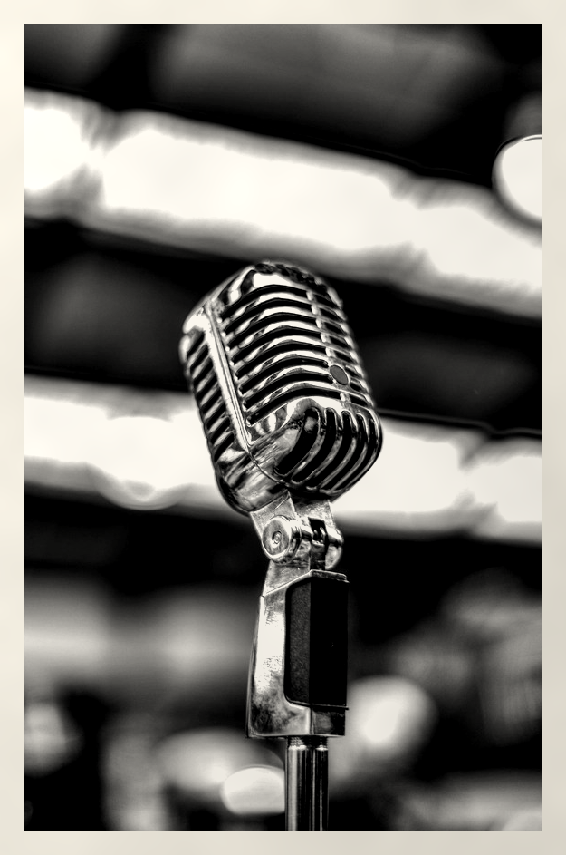

ALLAWI.PSD — CASTING CALL
مطلوب صوت
نسائي عراقي
دزّيلي فويس ٢٠ ثانية بالدايركت
النص اللي تقرينه بالبوست المثبّت

تحچين عراقي، طبيعيكأنج تسولفين لصديقتج
صوتج بيه إحساستضحكين، تستغربين، تسألين
تسجيل نظيف بالموبايلغرفة هادئة تكفي، الاستوديو مو ضروري